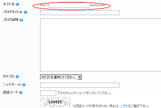

無料ブログの作成（シーサーブログ）
無料ブログは主に、このシーサーブログやFC２ブログ、ライブドアブログ、アメーバブログ、忍者ブログ、ココログ、さくらブログ、gooブログ、ジュゲムブログ、ヤフーブログなどで作成できます。
あと、グーグルのブロガーというのもあります。個人的にはグーグルのブロガーが好きなのですが、トラックバックができないという点がちょっといたいです。
私も初心者ですが、パソコン初心者にとってわかりやすい無料ブログといえば、このシーサーブログで作成するのがいいと思います。
カスタマイズのしやすさ、操作が簡単なこと、検索サイトとの相性のよさ、アフィリエイトのしやすさなんかがとてもいい感じです。
このシーサーブログでブログを作成する場合はまずアカウントを取得しましょう。
メールアドレスをもっているとすぐにアカウントを取得することができますが、もっていない場合は無料のメールアドレスを取得してみるといいと思います。

ブログタイトルや説明文、デザインを設定するとすぐにできあがりますが、このなかで一番重要なのはサブドメイン名の設定です。
任意の英数文字.seesaa.net
タイトルなど他の部分は後でいつでも変更することができますが、サブドメイン名の部分だけは変更することができません。
シーサーブログ作成の場合の一番のポイントです。
サブドメインを取得する際にも、なるべく短く、覚えやすいドメイン名を取得されることをおすすめします。
たとえば、ブログ作成のようなコンテンツを予定しているなら、英語翻訳してみると「blogging」という感じになります。
候補が空いていない場合でも、似たような感じで「blog-make」や「make-blog」、「blog-tips」などハイフン（アンダーハイフン「 _ 」は避けましょう。）を使用することで何かしら取得することができるものです。
サブドメイン名自体に意味のあるキーワードを含めることによって、SEO的にもいい感じになります。
サブドメインさえおさえておけば、あとは適当に入力しても、のちほど修正することができます。
- 無料ブログの作り方
このブログは無料ブログの作り方やカスタマイズ方法、アフィリエイトに関するあれこれです。特にシーサーブログの作り方を例にしてます。サイトマップはこちら。無料ブログの作り方のサイトマップブログなるものを作...